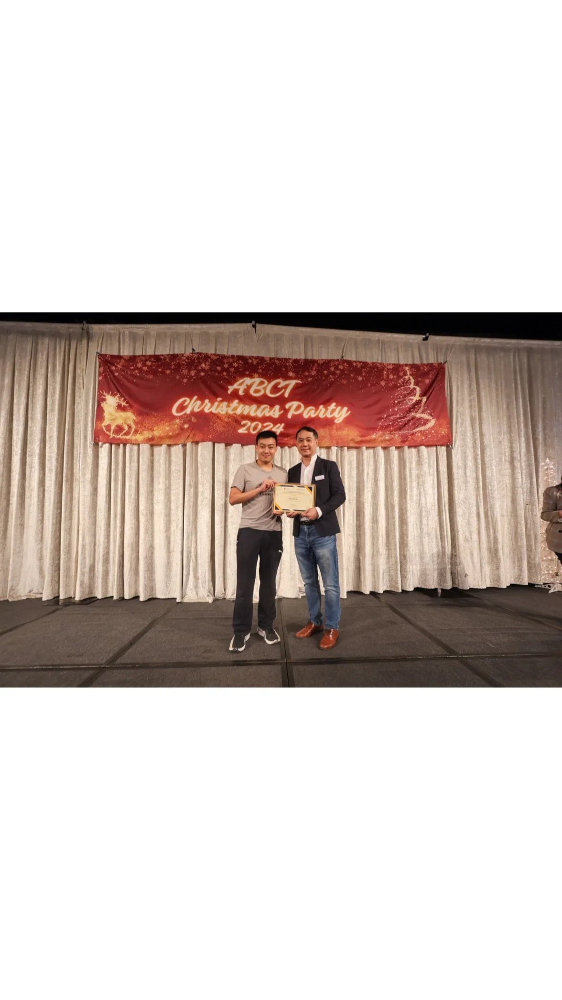

Computational Biology
I work where the atom meets the brain
Building molecular simulation tools for drug discovery. Founder of AtomBios. Selected by Nobel Laureates.
Get in touch →
Computational Biology
Building molecular simulation tools for drug discovery. Founder of AtomBios. Selected by Nobel Laureates.
Get in touch →
Recognition & Work


Real-time protein visualization and binding prediction. Incubated at HK Science Park.


Science meets entrepreneurship — from national broadcast to print.



About
I sit at the intersection of cryo-EM, computational chemistry, and software — translating academic breakthroughs into deployable platforms.
My startup AtomBios lets drug teams visualize protein–ligand interactions in real time. Test 1,000 hypotheses before committing to synthesis.
Whether you're evaluating computational tools, scouting talent, or exploring AtomBios for your team.
jackie.ng@connect.polyu.hk